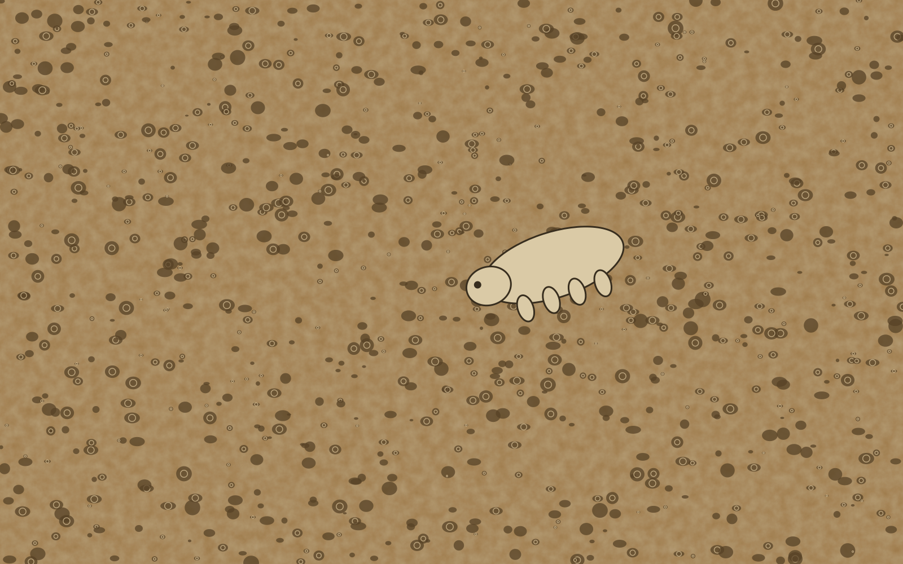

gatilhos · deps vanilla · mobile ok · custo baixo
O clique vira lugar.
Quando o botão é acionado, o retângulo faz morph para painel com 0.55s ease-out, porque o clique precisa mostrar que o estado mudou, não só piscar.
estado: fechado
FLIP · first → last → invert → play

ficha · origem = o botão
Nº 7, cortiça prensada.
- Diâmetro
- 10 cm
- Espessura
- 6 mm, borda chanfrada
- Uso
- Absorve condensação sem manchar
O mesmo gatilho, sem JS: details + summary
Por que o painel nasce do botão?
Porque o olho segue a origem. O painel ocupa o lugar que o botão prometia: a relação espacial explica o que aconteceu.
E o foco do teclado?
Segue o estado. Abriu: o foco vai para o fechar do painel. Fechou: volta para o botão de origem. Esc também fecha.
Quando não é click, é page transition?
Se o clique navega de verdade para outra URL, é Page transition. Click muda estado dentro da mesma página.
Usar
Abrir detalhe, toggle, FAQ/accordion, "ver mais", confirmação. :active scale(.98) sempre, aria-expanded no gatilho.
Não usar
Quando navega de verdade (é Page transition). Quando o destino não tem relação espacial com a origem: morph sem parentesco confunde.
Reduced motion / sem GSAP
Troca sem viagem: o painel aparece no lugar, o foco muda igual. Vanilla com Web Animations API, sem GSAP; o FAQ nativo funciona até sem JS.